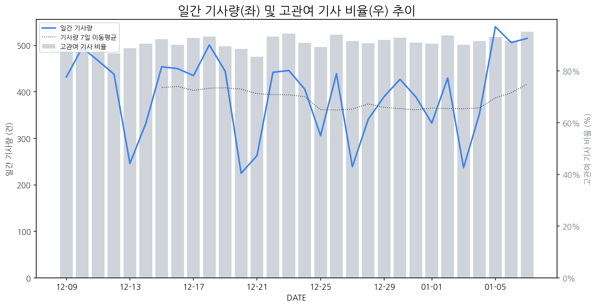

1
시장 활동 지표
기사량 추세 & 이상 징후 탐지
시장의 '전체 기사량'이 평소보다 비정상적으로 급증했는지(Spike)를 차트로 확인하고, LLM이 분석한 급등의 핵심 원인을 파악할 수 있음

고관여 기사란? 산업 연관 키워드로 수집된 기사들 중 디스플레이 키워드에 가중치를 반영하여 도출된 관련성 높은 기사
수집된 기사 수 (2026-01-07)
515
+32% WoW
기사량 변동 수준 (7일 이동평균 대비)
±6.7% 이하
2
오늘의 키워드
급격한 관심 ↑, 주목해야 할 키워드
1
레노버
+4.2σ
CES 2026에서 레노버가 AI 통합 슈퍼 에이전트 및 차세대 디바이스를 공개하며 주목받았습니다.
Related Metrics
금일 언급량: 15, 전일 대비: +14
Interpretation
AI 디바이스 수요 증가
Next Step
핵심 토픽 'IT_OLED_Topic' 관련 신호입니다. 3번 섹션(키워드 감성분석)에서 해당 토픽의 감성 변동을 교차 확인하세요.
2
울트라샤프
+3.9σ
델이 CES 2026에서 52형 6K 신규 '울트라샤프' 모니터를 공개하며 화제 중심에 섰습니다.
Related Metrics
금일 언급량: 10, 전일 대비: +10
Interpretation
프리미엄 시장 경쟁 가열
Next Step
'울트라샤프' 관련 상세 기사 및 경쟁사 반응 모니터링
3
모니터
+3.0σ
MSI의 QD-OLED 게이밍 모니터 출시와 델의 신규 프리미엄 모니터 발표가 시장 주목을 끌었습니다.
Related Metrics
금일 언급량: 15, 전일 대비: +11
Interpretation
신기술, 신제품 수요 증가
Next Step
'모니터' 관련 상세 기사 및 경쟁사 반응 모니터링
4
모바일
+3.0σ
배틀그라운드 모바일 신규 테마 모드 업데이트와 자율주행차 관련주 부각이 복합적으로 작용한 결과입니다.
Related Metrics
금일 언급량: 10, 전일 대비: +8
Interpretation
모바일 기기 수요 증가 기대.
Next Step
'모바일' 관련 상세 기사 및 경쟁사 반응 모니터링
3
실시간 Risk 키워드
경계해야 할 시그널 탐지
특정 토픽의 부정 감성 점수가 급등할 때 이를 즉시 탐지하고, "근거 기사" 링크를 통해 리스크의 실체를 빠르게 파악할 수 있음
키워드 분석 결과, 오늘은 걱정할 만한 하락 신호가 없습니다. (부정 언급량 변화: +1.5σ 이내)
4
주요 이벤트 모니터링
실시간 산업 동향 파악을 위한 주요 활동
최근 발생한 주요 기업들의 신제품 출시, 투자 등 주요 이벤트를 제공하여 매일 경쟁사 동향을 확인할 수 있음
폴라리스세원, 유일에너테크, 삼화전 등 수소차 관련주들이 상승세를 보이며 시장의 주목을 받고 있습니다. 이는 수소차 산업의 성장 기대감을 반영하는 것으로 해석됩니다.
Impact
해당 이벤트는 직접적으로 디스플레이 시장에 영향을 미치지 않지만, 수소차 산업의 발전으로 인해 차량 내 디스플레이 및 관련 부품 수요 증가 가능성을 시사합니다.
Next Step
디스플레이 제조 기업은 수소차 산업의 성장 추세를 모니터링하며 차량용 디스플레이 솔루션의 기술 개발 및 적용 가능성을 검토해야 합니다.
CES 2026에서 AI와 초경량 기술이 결합된 진화된 노트북 디스플레이가 선보일 예정이다. 이는 사용자 경험 향상과 휴대성 극대화를 목표로 한다.
Impact
AI 기반의 디스플레이 기술 발전은 더 스마트하고 사용자 맞춤형 경험을 제공하며, 초경량화는 휴대용 디바이스 시장의 경쟁을 심화시킬 것이다.
Next Step
AI 연동 및 초경량화 기술 개발에 집중하고, 이를 디스플레이 제품에 어떻게 접목할지 R&D 전략을 강화해야 한다.
삼성전자가 CES 행사를 넘어 자체적인 '더 퍼스트룩' 행사를 통해 전시와 컨퍼런스를 통합 개최하며 새로운 소통 방식을 시도했습니다. 이는 기존의 대규모 박람회 중심에서 벗어나 자사의 기술과 비전을 집중적으로 선보이려는 전략 변화를 보여줍니다.
Impact
이러한 삼성전자의 독자적인 행사 개최는 향후 디스플레이 시장의 기술 발표 및 마케팅 방식에 영향을 미쳐, 경쟁사들의 유사한 자체 행사 개최 또는 전략 수정으로 이어질 가능성이 있습니다.
Next Step
타 제조 기업은 자사의 강점과 차별화된 기술을 효과적으로 전달할 수 있는 새로운 형태의 온·오프라인 행사 기획을 검토해야 합니다.
CES 2024에서 중국 기업들이 권투 로봇, 계단 오르는 청소기 등 혁신적인 로봇 기술을 선보였다. 이는 중국 기업들의 기술력 향상과 시장 경쟁력 강화를 시사한다.
Impact
이러한 중국 기업들의 혁신적인 로봇 기술 발전은 향후 로봇 디스플레이, 인터랙티브 디스플레이 등 관련 디스플레이 시장의 새로운 성장 동력을 창출하거나 경쟁 구도를 변화시킬 수 있다.
Next Step
디스플레이 제조 기업은 이러한 중국 기업들의 로봇 기술 동향을 주시하며, 로봇과의 연동 및 통합에 필요한 디스플레이 솔루션 개발을 검토해야 한다.
LG CNS는 국방 IT 사업에서 연이어 수주를 성공하며 사업 영역을 확장하고 있습니다. 이는 국방 분야에서의 IT 시스템 구축 및 솔루션 제공 능력을 강화하는 계기가 될 것으로 보입니다.
Impact
LG CNS의 국방 IT 사업 강화는 관련 디스플레이 기술(예: 고내구성, 특수 환경용 디스플레이)의 수요 증가로 이어질 수 있으며, 디스플레이 제조사에게 새로운 사업 기회를 제공할 가능성이 있습니다.
Next Step
국방 IT 사업에 특화된 디스플레이 솔루션(예: 혹독한 환경에서의 안정성, 보안 기능 강화) 개발 및 관련 기업과의 협력 방안을 모색해야 합니다.